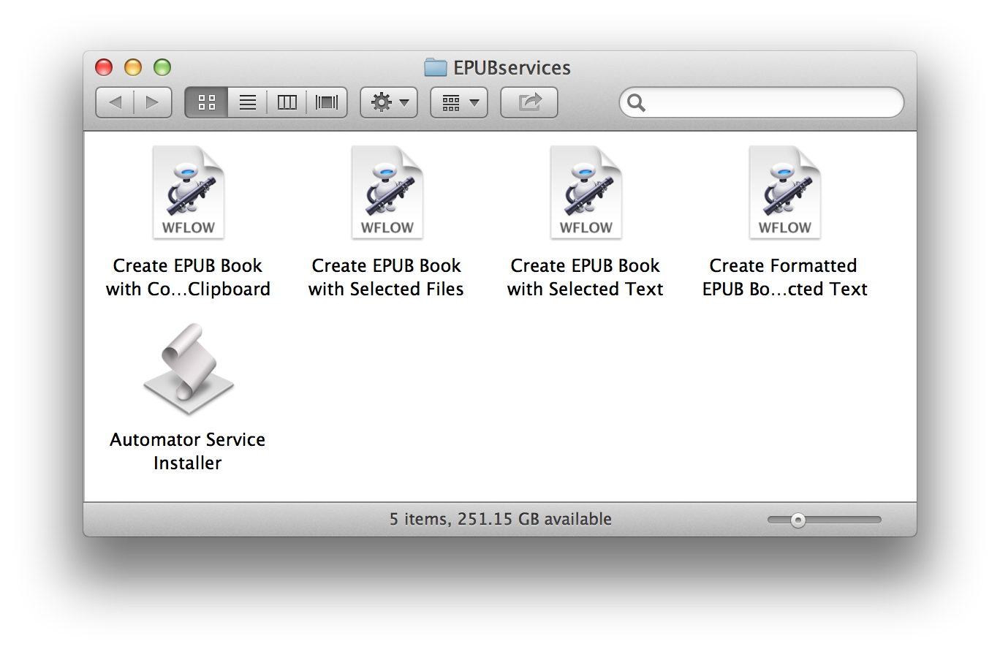
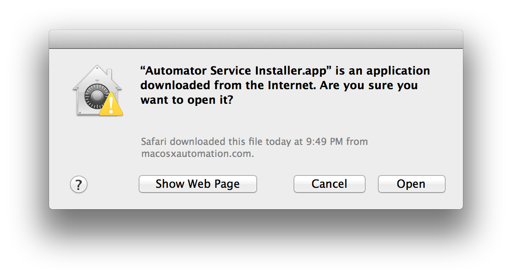
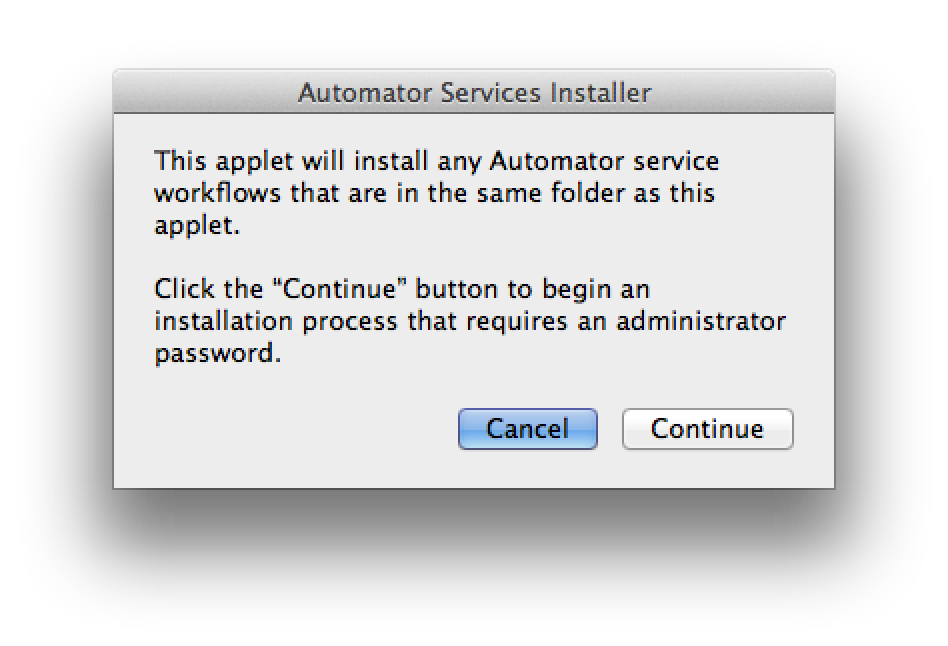
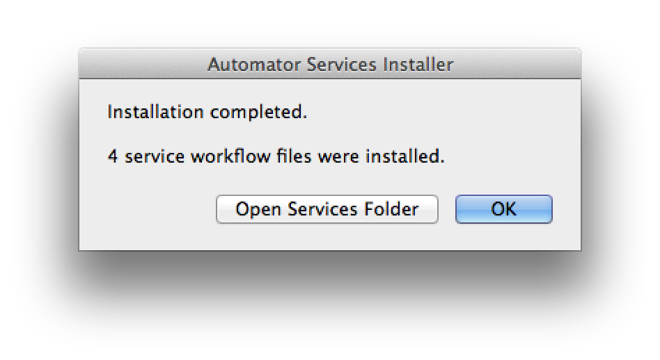
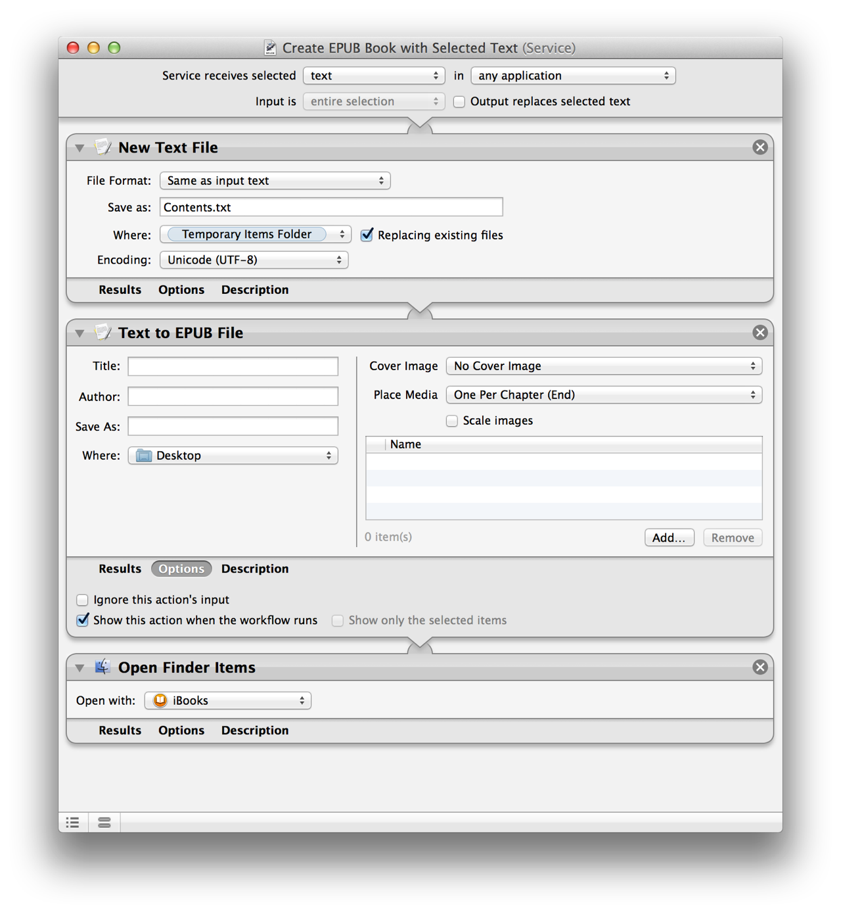
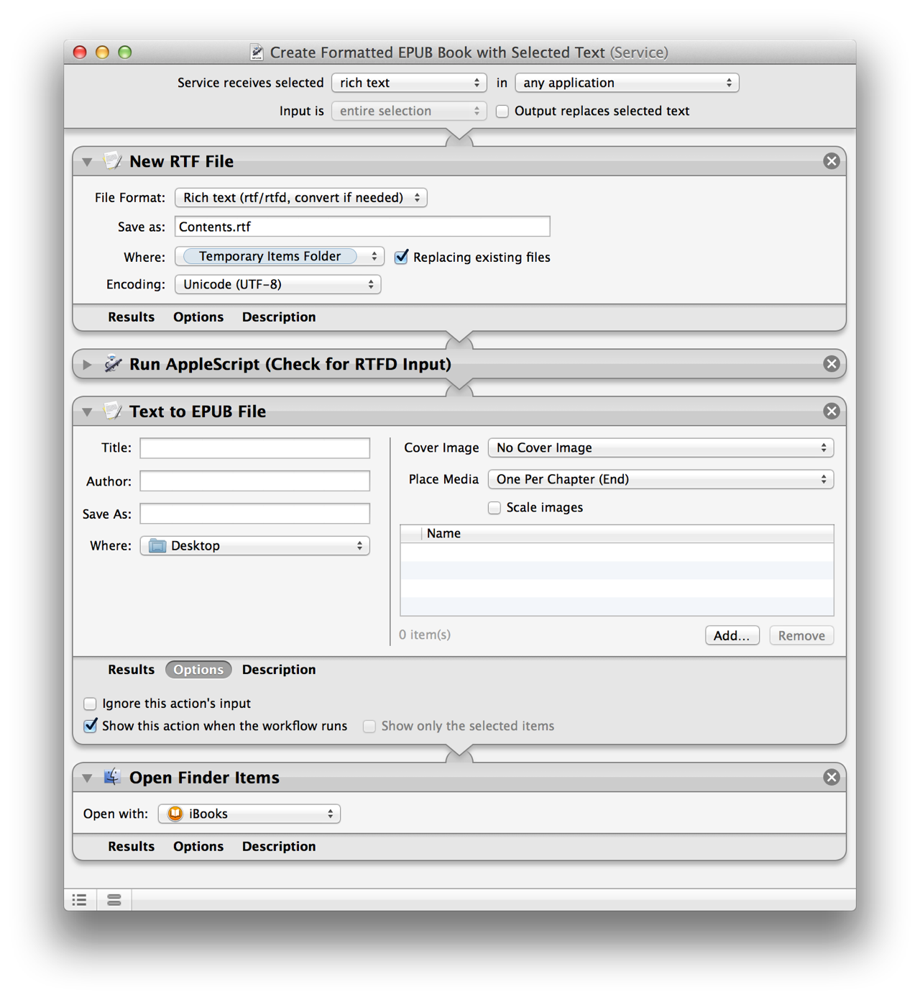
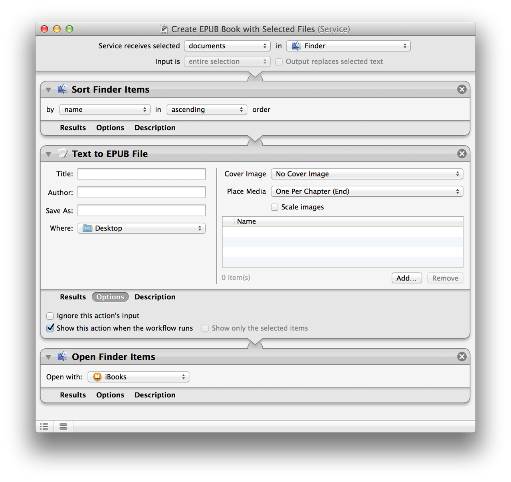
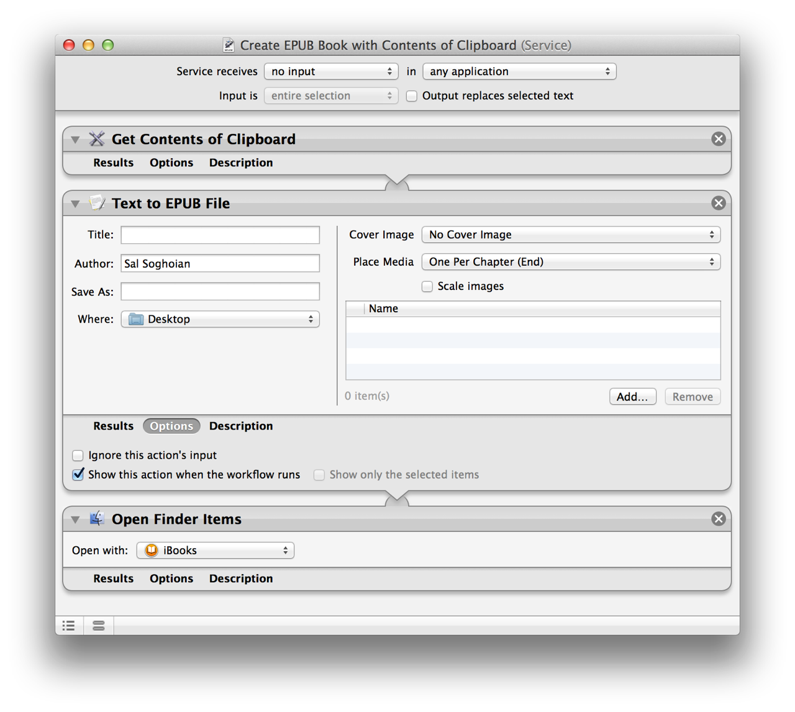

As stated in the introduction, OS X includes an Automator action named Text to EPUB that enables the creation of digital publications from various sources of text, graphics, and media. The power of this Automator action is made available for your use through contextual system services, which are enabled when you have text or text files selected.
During this workshop, you will download and install a set of system services that will be used to create digital publications from provided media and text files.
TIP: For an overview of Services, watch this short movie.
The Text to EPUB Services collection contains four Automator services you will use for converting text into digital books:
- Create EPUB Book with Selected Text • This service creates a standard EPUB book using the text selected when the service is activated. Works in most applications.
- Create Formatted EPUB Book with Selected Text • As with the previous service, this service creates an EPUB document from the selected text in an application, while retaining formatting such as font color, style, indenting, etc.
- Create EPUB Book with Selected Files • This service creates an EPUB document using text files selected in the Finder as the input text. Each file becomes a chapter in the book.
- Create EPUB Book with Contents of Clipboard • This service creates a digital publication using text placed on the clipboard as the source.
Additionally, each publication can contain images, audio files, and video files, chosen by the user when the service is run.
Installation of Automator-based services is easy, just follow these steps:
DO THIS ►DOWNLOAD and unpack the zip archive containing the Automator service workflow files.
DO THIS ►Open the folder containing the services, and double-click the Automator Service Installer applet. (⬇ see below )

A security dialog will display (⬇ see below ) informing you that the Automator Service Installer applet was downloaded from this website, and asking you to confirm your intention to launch the applet.
DO THIS ►Click the Open button in the security dialog to launch the Automator Service Installer applet.

The Automator Service Installer dialog will display (⬇ see below )

DO THIS ►Click the Continue button in the applet dialog (see above), and then enter an administrator name and password in the forthcoming security dialog (⬇ see below )

Once the Automator Service Installer has completed the installation of the Automator service workflows, it will display a confirmation dialog (⬇ see below )

For those interested in how the Text to EPUB action is used in the construction of the Automator service workflows, the following is a brief explanation of the design of each service workflow. Otherwise, skip ahead to the next workshop segment.
TIP: For a thorough introduction to Automator, watch this short movie.
- Create EPUB Book with Selected Text • This service is designed to create an EPUB document from the text selected in an application. Therefore the data input settings of the service workflow (located at the top of the workflow, before any actions) are set to accept text selected in any application. The data input bar is followed by an action that accepts the selected text and turns it into a text file on disk. The created text file is then used as input for the Text to EPUB action, which is set to display its action view to the user during the execution of the service, allowing the user to enter the name and location for the created file, as well as add any image, audio, or video files to the document.

- Create Formatted EPUB Book with Selected Text • This service is designed to create an EPUB document from the text selected in an application while preserving some of the formatting of the source text in the new document. Therefore the data input settings of the service workflow (located at the top of the workflow, before any actions) are set to accept rich text selected in any application. The data input bar is followed by an action that accepts the selected text and turns it into a rich text file on disk. The created RTF file is then used as input for the Text to EPUB action, which is set to display its action view to the user during the execution of the service, allowing the user to enter the name and location for the created file, as well as add any image, audio, or video files to the document.

- Create EPUB Book with Selected Files • This service is designed to create a multiple-chapter EPUB book using text files selected in the Finder as its input. Therefore the data input settings of the service workflow (located at the top of the workflow, before any actions) are set to accept documents in the Finder. The data input bar is followed by an action that sorts the files into alphabetical order. The alphabetically sorted list of files is then passed as input to the Text to EPUB action, which is set to display its action view to the user during the execution of the service, allowing the user to enter the name and location for the created file, as well as add any image, audio, or video files to the document.

- Create EPUB Book with Contents of Clipboard • This service is designed to create an EPUB book using the contents of the clipboard. Therefore the data input settings of the service workflow (located at the top of the workflow, before any actions) are set to not accept input but be available to the user from within any application. The data input bar is followed by an action that retrieves the contents of the clipboard, which is then passed as input to the Text to EPUB action that is set to display its action view to the user during the execution of the service, thereby allowing the user to enter the name and location for the created file, as well as add any image, audio, or video files to the document.
